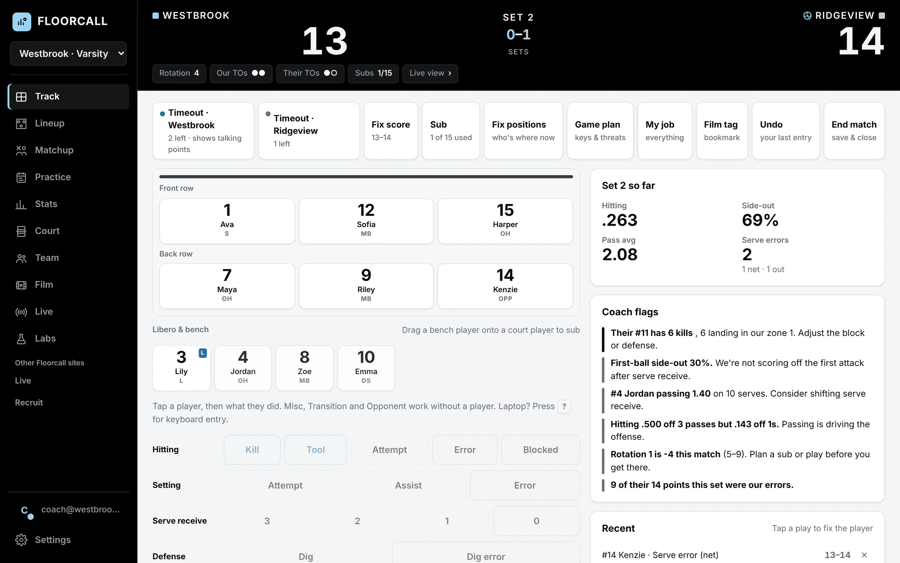
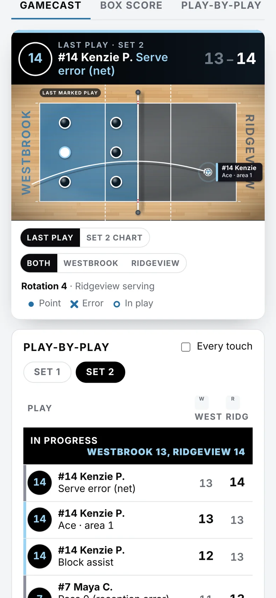
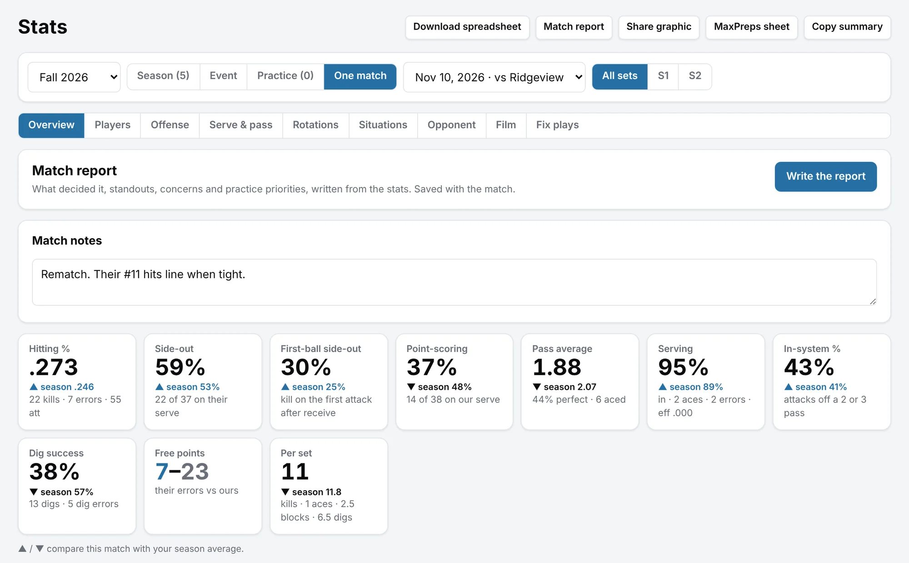
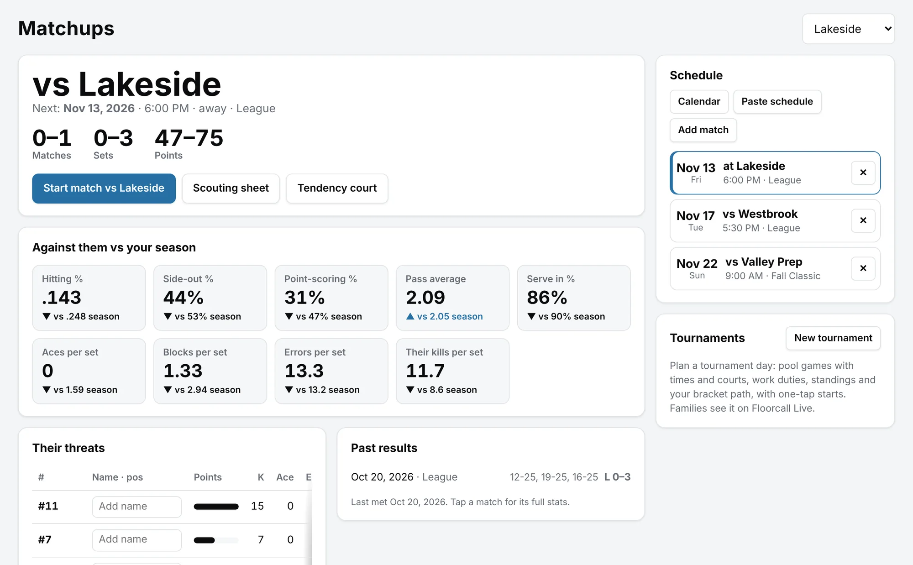
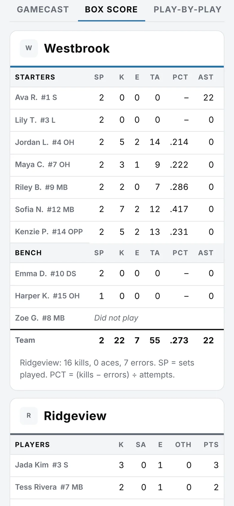
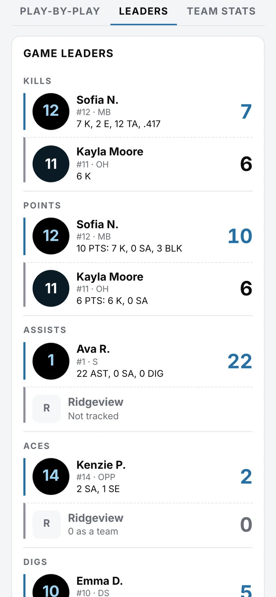
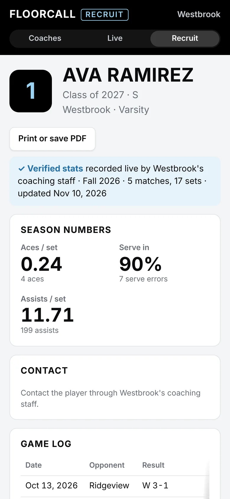
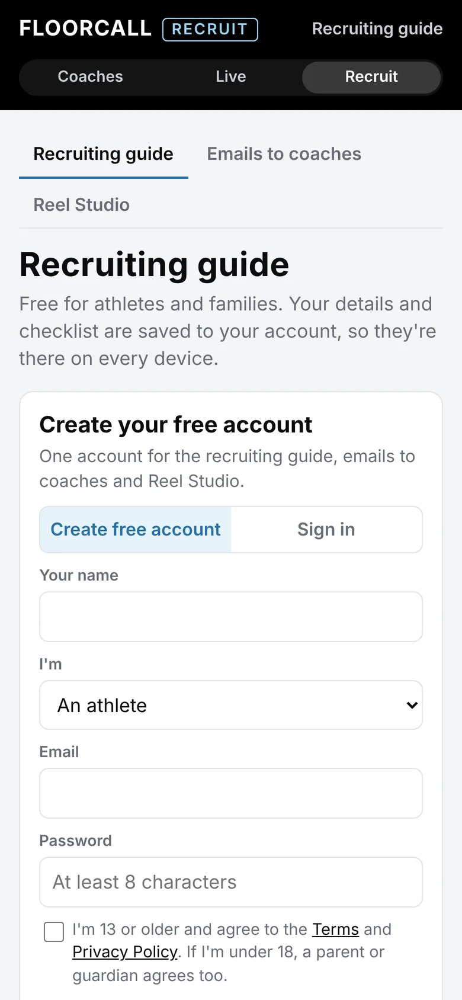

The stat sheet that coaches from the bench.
Track every touch live, see the numbers that decide matches, and get stats to your players, families and recruiters before you leave the gym.


Every number you need at a timeout.
Floorcall knows a kill came off a 1-pass, which rotation is bleeding points and where their hitter is landing it. Side-out by pass grade, in-system hitting, rotation results and setter distribution update with every tap.
Explore a sample season
Works in any gym
No Wi‑Fi needed. Everything saves on the device and syncs when you're back online.
Your whole staff
Assistants track passing or serving on their own phones, and every entry lands in one match.
Done when the match is
MaxPreps sheet, spreadsheet, match report and a final-score graphic, ready to post.
Know the opponent before the first serve.
Every time you play a team, Floorcall remembers it. The rematch page shows their threats by jersey number, where their kills land, and a game plan built from your own numbers against them.

Families follow every point.
Floorcall Live turns your tracking into a broadcast-style gamecast: the court with where every ball landed, play-by-play with the player next to each play, a full box score and game leaders, on any phone. Share one link or a six-letter code, and followers get a notification when the match starts and ends.
Watch a demo game

Stats a college coach can trust.
Floorcall Recruit gives athletes a profile with numbers verified by their coaching staff, a game log and highlights. It also has a free recruiting guide, emails to college coaches written from their stats, and Reel Studio for building a highlight video.
Visit Floorcall Recruit

Stat a whole match from film.
Upload the video and Floorcall finds each rally from the referee's whistle, so you skip the dead time. Every play you enter becomes a clip.
Ask for clips
Type “all solo blocks” or “Maya's kills to area 1” and watch them back to back.
Team film sessions
Pick clips, add a note and draw on the frozen frame. Players watch on their phones.
See who watched
Each clip is ticked off as a player finishes it, so you know who's ready for practice.
And the rest of the season.
Lineups and rotations
All six rotations with results, and a lineup suggestion from the data.
Practice plans
Built from what the stats say to work on, with a drill library and attendance.
Player pages
Trends, goals and a report card for every player.
Ask your stats
“Who should pass in rotation 2?” answered from your own numbers.
An errors page
Every point you gave away, by kind, by player and by rotation.
Pick your stats
Choose the columns you care about for the team or one player, then print.
Their roster
Enter their numbers, and names if you like, so you know who's scoring on you.
Fix plays
Change, delete or add any play afterward. Everything recalculates.
Scrimmages
Split the roster, track both sides and compare.
Keyboard entry
Stat keepers on a laptop type a jersey number and a letter.
Two liberos
Name one or two and swap them between rallies; stats follow whoever is in.
Clubs
Every team's record, numbers and next match on one screen.
Track your next match with it.
Free while in beta. Set up your roster in a couple of minutes, or look around a full sample season first.